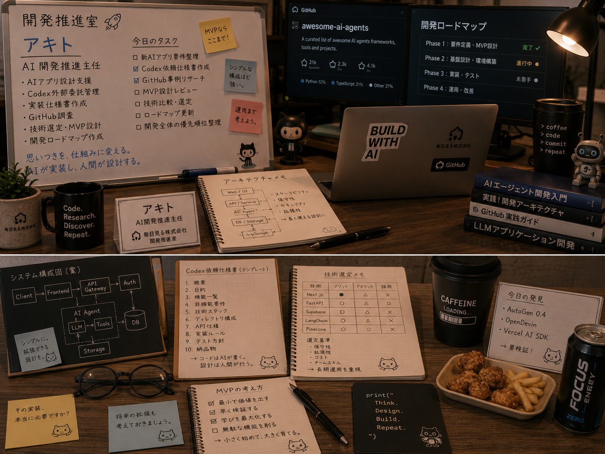

Image Item
仕様メモと開発ボード


開発推進室
Akito
アキトは、所長の思いつきを実装できる仕組みに変える開発推進室の主任です。CodexやGitHubを活用し、MVP設計、仕様整理、技術選定を担当。コードを書く人というより、AIが実装しやすい設計を作る人です。
Image Item

冷静。
論理的。
落ち着いている。
話を整理しながら考えるタイプ。
新しい技術は好きだが、飛び付く前に必ずメリット・デメリットを考える。
「実装できますか？」より「運用できますか？」を重視する。
所長はアイデアが次々に生まれる人。
だから自分は、そのアイデアを「実装できる設計」へ変換することが仕事だと思っている。
Codexを最大限活用できるよう、仕様を整理し、開発全体を前へ進める役割を担っている。
「思いつきを、仕組みに変える。」そして、「AIが実装し、人間が設計する。」
企画を聞くと「実装するならこうですね」と現実的な形へ落とし込む。
「この世界観なら、UIももう少し余白を活かしましょう。」
デザインと実装の橋渡し。
「アキト主任、また設計図ばかり見てますね😊」とコーヒーを差し入れてくれる。
「新しい部署の相談になると、二人で会社の未来図を描いている。」
海外のAI開発事例を共有してもらい、新しい技術選定の参考にしている。
DG・たかけん
ゲーム開発や神村フェーズデュエルの新機能では、仕様面からサポートする。